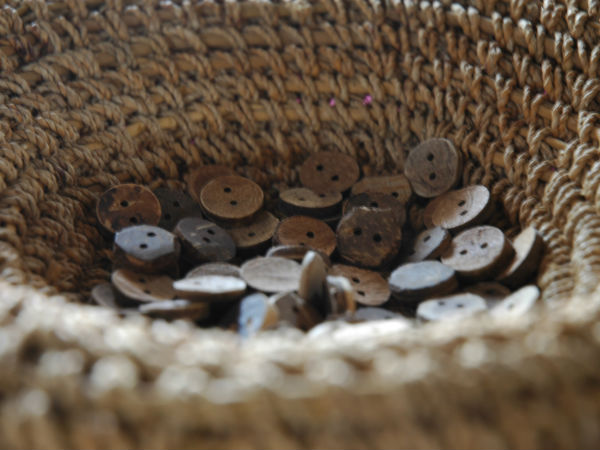
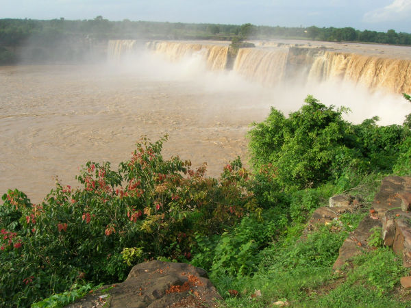

tourista encourages the people to mainly visit the heart-core places of india -rural india ,where the real beauty of india
lies .tourista mainly helps the modern world to enjoy the real beauty of the nature not in smoke but in fresh rural india .the main attraction is the pure and fresh nature
Travel-help
to explore more places here is some transport
hut-Hotel
to create a rural environment then the atmosphere is also should be like that
tourists -images
some images which helps you to visit those places
Top 10 Places to Visit In Rural India
This small village in Andhra Pradesh is popular for its agriculture, mangroves and the prominent silk business. The traditional homes are a beautiful sight and staying in one of these are eye openers on the healthy lifestyle of village folk. The people are involved in various facets of silk saree weaving. Enjoy the grand tour of the silk saree making process, the warm hospitality of the people and the many temples that dot this little village. You can also explore the surrounding regions for a picnic or trek.
Puttur, Andhra Pradesh
The fascinating legends behind the birth of this village date back to the time of the epic Ramayana. Anegundi in the Koppal district of Karnataka is believed to have been the kingdom of monkeys or Kishkintha and is older than Hampi. Located on the banks of river Tungabhadra, the rocky plateau has many historic sites, temples, tanks and scenic beauty that is waiting to be explored. Club the attractions with the engaging local tales and you are sure to have a journey you will never forget

Anegundi, Karnataka
Theerthamalai in Dharmapuri district of Tamil Nadu is an emerging destination for rural tourism in the country. The name of the village translates to mean ‘The Hill of holy Water' and has a temple that dates back to the 7th century. The Theerthamalai temple that derives its name from the springs originating here along with the waterfalls called Rama Theertha and Hanuman Theertha are places worth visiting. Enjoy the calm and quiet that only such villages can provide.
Theerthamalai, Tamil Nadu
The small Buddhist locality in Jorhat district known as Shyam Gaon can provide an interesting rural journey in Assam. India is an interesting country, where culture and traditions change every few hundred meters. The Shyam Gaon is one such village, where the local Khamyang tribals are followers of Theravada Buddhism. Learn more about their culture and way of life in this peaceful village.
Shyam Gaon, Jorhat, Assam
The tribes of India present interesting opportunities to learn about colourful cultures and a way of life far removed from the rest of the country. Chitrakote is one such village located in the Bastar district of Chhattisgarh. Popular for the folk arts and handicrafts that are made in the village, Chitrakote is also popular for the Chitrakoot waterfalls. The village has much to offer from scenic surroundings to exciting festivals such as the Goncha that sport the usage of bamboo guns and fruits as ammunition! You can also visit the Jagdalpur Palace and Danteshwari temple located here.

Chitrakote, Chhattisgarh
The village located in the Kutch or Kachchh district of Gujarat is a beautiful place that has a mix of both the desert of clay and sand that makes the region so unique. The region has a diverse eco-system, with the wetlands providing home to over 100 species of birds during the winter months. Enjoy the stay here with options such as the rural resort called Shaam-e-Sarhad that is operated by the Hodka community. You can also take part in the celebrations of Sharad Utsav that is celebrated during the period of Navaratri.
Hodka, Gujarat
Located in the Puri district of Odisha, the village of Pipli is a small area that supports nearly 230 families. The region is popular for the artistic rendition of Applique. The art perfected in Pipli involves the process of cutting variety of cloth materials in the shapes of birds, mythological characters, nature and decorative motifs, etc, and sewing these shapes onto a cloth. These products range from home decor to clothing, and are made available even in the tourist destinations such as Bhubaneshwar, which is located a mere 20 km away.
Pipli, Odisha
Situated in the North district of Sikkim, Lachen is a small village that is set against a backdrop of snow-capped mountains and conifer trees. The village that has only recently thrown open the doors to travellers, is a pristine and unexplored landscape. Get a taste of the simple life of the village folk, take a trip to the Lachen Gommpa and enjoy treks and walks in the surrounding regions. The locals are friendly and social, so you are sure to find good company in them!
Lachen, Sikkim
Among the rural travel destinations in India is the Ballabhpur Danga, located 220 km from Kolkata in West Bengal. The region consisting of the Santhal Adivasi tribal community lies close to the Sonajhuri forests. The village is known for its art and craft such as Batik, carpentry, leather work, mat weaving etc. The beautiful tribal homes adorned with designs are a sight indeed! The tribal music and dance are also wonderful to observe. You can also attend the Saturday 'Haat' or market at Sonajhuri.
Ballabhpur Danga, West Bengal
The backwaters of Kochi have a secret that is beautiful and less explored; the eco-tourism destination called Kumbalangi. The small island village is the first rural tourism initiative taken by the Kerala state. It has many scenic vistas, including the popular Chinese nets that can be enjoyed by travellers visiting the region. You can explore the artists' village of Kalagramam, the well nurtured mangroves and try your hand at bait fishing. There are many homestays here that provide budget stay options.
Kumbalangi Island Village, Kerala
Snippets and Reviews
some highlighted memories by our visitors and reviews
i enjoyed a lot in all my journey in india by visiting many places and i hope i will come back
i enjoyed a lot in all my journey in india by visiting many places and i hope i will come back
i enjoyed a lot in all my journey in india by visiting many places and i hope i will come back
Snippets and Reviews
some highlighted memories by our visitors and reviews
i enjoyed a lot in all my journey in india by visiting many places and i hope i will come back
i enjoyed a lot in all my journey in india by visiting many places and i hope i will come back
i enjoyed a lot in all my journey in india by visiting many places and i hope i will come back